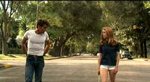

|
Badlands/B+,B
|
|
Warner/1973/95m/ANA
1.85
|
Terrence Malick captures the space
surrounding one’s
inner existence with ex-ray perception. In Badlands, two young
people, lost in their worlds and trying to find a meaning to
life, gravitate to
one another. Kit throws garbage for work and one day meets
lonely Holly in front of her house. Kit charms Holly with his
attention. Together, they seek escape from their mundane
existence. The unexpected journey is both beautiful and
horrifying. Set in settings of bucolic innocence, director
Malick's vision, makes sharp and sudden changes in direction.
From romance to thriller to road movie, Badlands travels
under confident guidance. Montana and South Dakota look bleak
and beautiful.
 |
|
Innocent
meeting. ©Warner |
Martin
Sheen is devastating in his portrait of Kit Carruthers. Sheen's
matter-of-fact attitude is delivered with an eerie sense of
amorality. Kit does what he must to survive. I don't think he
even understands his own motivation. Sissy Spacek’s
narration as the teenage Holly, tinged with innocence and an acceptance of fate,
represents the tone of the empty Malick landscape to perfection.
Spacek, young, beautiful, virginally innocent, speaks with a forlorn
fatefulness. The heavy narration accompanying the beautiful
images is crucial to the success of Badlands, and Spacek
delivers the goods. There are great characters aside from
Kit and Holly. Holly's Dad, a sign painter, is wonderfully
written. The opportunity to show off his work against the
desolate backdrops is spectacular. Warren Oates is perfect
casting as the Dad. Oates looks like he knows how to paint a
sign and work at being a single father.
A hallmark of the Malick's few films is
exquisite photography. Badlands features the work of a
young Tak Fujimoto, but it is Malick's vision, just as Days
of Heaven and the recent Thin
Red Line, reflect the vision of the director. The
score's light, fairy tale, feeling, suckers you into the
darkness of Badlands. Innocence destroyed is a powerful
theme. Malick's team puts the elements together with rare
harmony. But, most significant is the credit "written,
directed and produced by Terrence Malick."
The range of colors on this DVD capture the
outstanding photography quite well. Contrast is also excellent
with fine lighting balance. The DVD suffers from excessive edge
enhancement resulting in ghosting around many images. The film
elements are very grainy and the grain on the DVD is even more
prominent because of the enhancement. Badlands has been remixed
to Dolby Digital 5:1 surround. The music, so integral to the
feeling of the feeling, is delivered very cleanly, as is the
dialogue. The gun shots are sudden and shocking in report.
Surround information is not aggressive.
|
The
Feature
Archive has articles
ranging from John Ford to Screen
Voices, The
Heistmasters, Akira
Kurosawa and Frank
Darabont.

Catch the Hollywood take on Blonde Bimbos by clicking on the
image above.
Check out the Movie
Poster Archive
for short bios and images of Susan Hayward, Kirk Douglas,
Katharine Hepburn and many more. This month's featured star
is Clark
Gable.
Imaging
Science Foundation
The Imaging
Science Foundation promotes proper standards in home theater
viewing. ISF trained technicians offer monitor calibration
services to consumers. The difference in a properly
calibrated monitor can be astounding. Click on the image to find
an ISF member near you.
HOT
LINKS
DVD
Verdict
They
may be judgmental, but that's the point, isn't it. Lots of DVD
reviews plus news and more
The
Home Theater Forum
Looking for
lively and helpful exchanges on home theater, DVD, movies. Visit
this friendly site and get a hardy welcome.
Home Theater
Reference Reviewing System
When you read a DVD review it's of utmost importance to know
what equipment is being used to evaluate quality. Click on the
projectors to find out more.
|